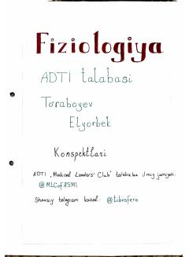

FEEritrotsitlar va gemoglobinning fiziologik xususiyatlari haqida tibbiy konspekt.
Ushbu konspekt tibbiyot talabalari uchun mo'ljallangan bo'lib, eritrotsitlar va gemoglobinning fiziologik hamda patologik xususiyatlarini qamrab oladi. Unda eritrotsitlarning tuzilishi, funksiyalari, qon tarkibidagi miqdori va gemoglobin almashinuvi kabi muhim mavzular yoritilgan.